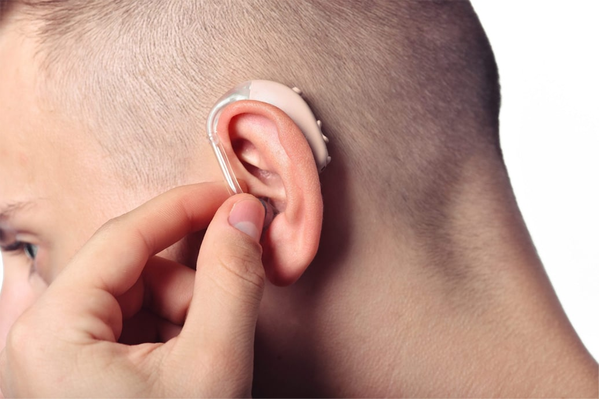

27.04.2022
Nagyon gyakran nem a hallássérült, hanem a hozzátartozói veszik észre először a halláskárosodást. A környezetében lévők észrevehetik, hogy az Ön számára kényelmes hangerő valójában túl nagy. Időszakos fülzúgás, beszédzavar, az az érzés, hogy a az emberek túl halkan beszélnek , mindezek halláskárosodásra utalnak. Mi a teendő ebben a helyzetben, és lehetséges-e a hallás helyreállítása? Meghívott vendégünk,Hargithai András audiológus.

- Jó napot, Doktor Úr! Köszönjük, hogy időt szakított ránk. Mondja csak, a statisztikák szerint hány éves kortól indulhat meg a halláskárosodás?
- Üdvözlöm Önöket, köszönöm a meghívást, mindig szívesen segítek. Először is szeretném elmondani, hogy a világon körülbelül 700 millió embert érint valamilyen mértékben a halláskárosodás, bár ezek a statisztikák minden típusú károsodást tartalmaznak - a helyi, kezelést nem igénylő fajtától teljesen a süketségig. Másodszor, ne gondolja, hogy a halláskárosodás csak idősöket érintő probléma. De természetesen ez nem így van.
A halláskárosodást többféle dolog is okozhatja, többek között: trauma, hosszan tartó erős zaj, hangos hangok, különféle betegségek, bizonyos gyógyszerek és azok mérgező hatásai. A tömegközlekedés, különösen a metró, a gyári munka, a hangos zene, antibiotikum szedése. Még a kipufogógázok és a xilol alapú festékek is hatással lehetnek a hallásra. A segítségért fordulók között jelenleg sok tinédzser és 40 év alatti személy van, akiknél a szenzorineurális halláskárosodást az úgynevezett "kedvezőtlen környezet" okozta.
– Hogyan értheti meg az ember, hogy problémái vannak?
– A hallásvesztés nagyon ritkán jön a semmiből. A problémák általában hosszan és fokozatosan alakulnak ki, így könnyen észrevétlenül maradhatnak. Az ember alkalmazkodik, így gyakran nincsenek különösebb nehézségek a mindennapi életben. Ha az ember rosszabbul különbözteti meg a háttérhangokat, zaj, váladékozás vagy fájdalom jelentkezik a fülében, megemeli a hangerejét, visszakérdez, vagy könnyen belefárad a másokkal való beszélgetésbe, könnyen lehet, hogy hallásproblémája van.
Fontos tudni, hogy a legtöbb nagyothalló ember szégyelli beismeri, hogy nem érti, amit mondanak neki. Hatalmas erőfeszítést kell tenniük, hogy a másikra összpontosítsanak és megértsék az ember beszédét, és ez stresszhez és súlyos fáradtsághoz vezethet, ami csak növeli a teljes hallásvesztés kockázatát.

– Ha a hallás romlani kezd, lehet valamit tenni?
- Szerencsére a modern tudomány és az orvostudomány gyorsan fejlődik, és most van egy készítmény, amely segíthet. -nek hívják, és működése a cochleáris szőrsejtek normál működésének helyreállításán alapul. Ez a halláskárosodás fő oka.
Ha a hallás fokozatosan csökken, akkor a felépülés mértéke számos tényezőtől függ, mint például: az életkor, a károsodás mértéke, fertőzés stb. Enyhe elváltozás esetén az esetek 99%-ában pozitív dinamika figyelhető meg ! Nincs ilyen hatása egyetlen készítménynek sem.
Hirtelen halláscsökkenés esetén, ha időben elkezdik a terápiát, akkor az esetek mintegy 92%-a pozitívan végződik, és a hallás teljesen vagy majdnem teljesen helyreáll.
– Hogyan hat ez a készítmény?
– Minden a halláskárosodás okától és a betegség természetétől függ. Például a labirintus keringési zavarai esetén a javítja az anyagcserét a szövetekben és a sejtekben.
Ha fertőzést követő halláskárosodásról van szó, akkor a készítményben található természetes összetevők elpusztítják a baktériumokat, javítják a szövetek anyagcseréjét és az idegimpulzusok átvitelét.
Gulladás esetén, vagy például gennyes középfülgyulladás esetén ez a szer általános gyulladáscsökkentő, fájdalomcsillapító, fertőtlenítő hatású. A betegek a duzzanat csökkenését, a kellemetlen érzések megszűnését észlelik, a tünetek rövid időn belül megszűnnek.
Hangérzékelési zavarok esetén, amelyek fokozott zajjal, traumával járnak, az segít enyhíteni a hallóideg duzzanatát, megszünteti a vérzés hatásait a belső fülben és megszünteti a gyulladásos folyamatot.
- Miért olyan hatékony? Vannak analógjai?
– Az -nek nincs analógja, mert egy teljesen természetes gyógymód, amely nem egy antibiotikum és nem zavarja meg a szervek működését.
Ez a természetes összetevőinek köszönhető:
- normalizálja a fülkagyló területén lokalizált vérkeringést;
- segíti a hallószervek sérült porcainak gyors helyreállítását és regenerálódását;
- a Pseudomonas aeruginosától a streptococcusig terjedő baktériumok nagy csoportjaira is hatással van, elpusztítva a kórokozókat és a vírusokat;
- óvatosan hat a gyulladt területre, megszünteti a rendellenességek kiváltó okát;
- hozzájárul a hallásfunkció javításához;
- megállítja a daganatok kialakulását, aktiválja a helyi regenerációs folyamatokat;
- hozzájárul az anyagcsere-folyamatok normalizálásához a fülkagyló sejtszerkezetében.

- Milyen javallatok vannak a szer használatára?
- Ez egy széles spektrumú készítmény, terápiásan és profilaktikusan egyaránt alkalmazható. A használata a hallás javítására az alábbi helyzetben javasolt:
- gyulladásos folyamatok;
- füldugulás (különösen szezonális, hőmérsékletváltozással);
- hallásfunkció sérülése;
- különböző fájdalomérzet;
- genetikai hajlam (süketség, krónikus fül-orr-gégészeti betegségek közeli hozzátartozóknál);
- megnövekedett hallásterhelés vagy megnövekedett háztartási zajszint;
- bizonyos, a hallásfunkciót negatívan befolyásoló gyógyszerek alkalmazása.
Ez a szer megszünteti az összes zavaró tünetet, és megakadályozza a kóros folyamat kialakulását a kísérő szövődményekkel. A gyakorlat azt mutatja, hogy a kúra használata lehetővé teszi a hallókészülék hordásának elkerülését a jövőben.

– Ez hihetetlen! Szóval most már bármelyik hallássérült ember meg tudja oldani a problémáját?
- Minden a betegségtől és a károsodás mértékétől függ. A leggyakrabban a kezdeti stádiumban segít, és a halláskárosodás megelőzésében is nélkülözhetetlen. De egyénre szabottan képes helyreállítani a hallást akár súlyosabb rendellenességek esetén is.
- Akkor is lenyűgöző teljesítmény!
– Igaza van, egyelőre ez az egyetlen gyógymód ilyen széles és hatékony hatásspektrummal.
- Köszönjük, hogy elmondta, hogyan kezeljük a halláskárosodást. Csak egy kérdésem maradt. Milyen gyógyszertárakban lehet megvásárolni ezt a szert?
– Mindig szívesen segítek. És szeretném mindenkinek elmondani, hogy ha hallásproblémái vannak, vagy állandó zajban él, szeret hangosan zenét hallgatni vagy tévézni, akkor mindenképpen szüksége van legalább egy kúra elvégzésére. Ami a második kérdését illeti, megmondom őszintén, hogy ezt a terméket nem lehet gyógyszertárban megvásárolni. Ez annak köszönhető, hogy a gyártók ideiglenesen felbontották a szerződést minden gyógyszertári lánccal.

— Miért? Hol lehet hozzájutni akkor ehhez a szerhez?
-A gyártók több hónapig próbálták értékesíteni a készítményt a patikákban, de a bejáratott gyógyszertárak ára egyszerűen elfogadhatatlan volt. A közel 1000%-os felár egyszerűen tönkretette az embereket! A gyógyszertárak képviselői szerint az ilyen magas árat az indokolja, hogy a egy hatékony gyógymód, és többé senki sem fog havonta pénzt költeni régi gyógyszerekre, ha elvégezhet egy kúrát, és elfelejtheti az egészségügyi problémáit. És ez , azt mondják, óriási anyagi veszteségeket okoz a gyógyszertáraknak és a gyógyszergyártó cégeknek. Ezért emelték annyira meg a kiskereskedelmi árat. De gyorsan megnyugtatnék mindenkit, a gyártó átállt az online értékesítésre, és még 50% kedvezményt is biztosít korlátozott számú terékre. Ezért azt tanácsolom mindenkinek, akit érdekel a dolog, hogy azonnal adja le a rendelést.
Doktor úr, én állandóan fejhallgatót hordok. Ez káros?
Káros a hangerő állandó túllépése, valamint a fejhallgató közlekedési eszközön való használata. A fejhallgató vagy ráakasztható kell legyen, vagy füllenyomatból kell készíteni. Javaslom a megelőző kúrát, hogy ne aggódjon amiatt, hogy a fejhallgató miatt elveszítheti a hallását.
Köszönöm doktornak, hogy minden kérdésre válaszolt! Sokat segített, már meg is rendeltem a szert. Azt gondolom, mindenképp segít.
Elmesélem a tapasztalataim. Romlott a hallásom, és mindenki ijesztgetni kezdett, hogy hamarosan teljesen megsüketülök, és sürgősen be kell szereznem egy hallókészüléket, amíg nem késő. Nem akarok semmilyen agyműtétet, kockázatos dolog, bármennyire is menő. Ráadásul a helyzetem nem volt olyan rossz. Úgy döntöttem, hogy kipróbálom a szert. És csoda: mindent hallok, még azt is, ahogy a szomszédom 3 falon keresztül horkolnak!
Doktor Úr, engem nagyon zavar a zaj. Hogyan védjem meg magam és veszélyesek-e a füldugók?
Minden zaj ártalmas. Viseljen speciális fejhallgatót, vagy próbálja ki a szert, amivel megelőzheti a jövőbeni hallásproblémákat. Ami a füldugót illeti, ritkán, de alkalmazhatók. Ügyeljen arra, hogy a fülének megfelelő kialakítást válasszon, tartsa tisztán és figyeljen a lejárati időre.
Micsoda rémálom, úgy tűnik, hogy anyámnak problémái vannak, legalábbis a cikk szerint. Sürgősen megrendelem neki a készítményt, amíg nem késő.
Valahogy nem tudom elhinni, hogy ez lehetséges.
Én sem hittem el, amíg ki nem próbáltam. Egy szomszédtól kaptam a szert, neki megmaradt a fele. És csoda történt, ez a szer segített az örökös belsőfülgyulladáson és részleges hallásvesztésemet is rendbe tette. Most már elfelejthetem a fájó füleket, a fejfájást és tökéletesen hallok.
Hűha, nem tudtam, hogy ez lehetséges.
Mégis mit vártatok? Az orvostudomány nem áll meg.
Doktor Úr, időnként zúg a fülem, mit tegyek?
Ez fülzúgás. Nem betegség, hanem tünet. A zaj, nyikorgás/búgás/csörgés/kattanás/homok/búgás a belső fülben lévő szőrsejtek normális reakciója, amely akkor jelentkezik, ha: enyhe halláskárosodás, stressz, akusztikus trauma, szomatoszenzoros manifesztáció, érrendszeri zavar jelentkezik vagy bizonyos gyógyszerek mellékhatása is lehet. A további következmények megelőzése érdekében használja a készítményt.
Egy súlyos betegség után volt olyan, amikor nem aludtam eleget, 18 órát dolgoztam. A munka, ahogy mondani szokták, az eredményre ment. És késő délután, amikor az adrenalin már alábbhagy, észrevettem, hogy egy partnerrel folytatott beszélgetés során Nem értem a szavak jelentését, amit kimond. Hallottam a betűket, de nem tudtam szavakba fűzni. Ha koncentrálok, akkor egy ideig újra értem az elhangzottak jelentését. Aztán megint valami hülyeséget hallok. Természetes, hogy miután kipihentem magam, minden visszatért a normális kerékvágásba. De szerintem ez neurológia probléma, vagy hallással lehet gond? Talán én is kipróbálom a készítményt, hogy ne legyen gond a jövőben.
Nálam is előfordult ilyen. Jártam orvosnál is, azt mondják, minden rendben van, kivéve a hallást. Szóval most valószínűleg én is kipróbálom ezt a szert.
A egy igazi megmentő! A hallásom rohamosan romlani kezdett. Valószínűleg pár év múlva nem hallottam volna semmit, ha nem sikerült volna a készítménnyel megszüntetni a gyulladást és javítani a folyadék összetételét a belső fülben, ami problémákat okozott.
Doktor úr, elkezdtem halláscsökkenést észlelni, mit tegyek?
Az esetek 90%-ában sikeresen megelőzhető a halláskárosodás, ha időben cselekszik az ember. Ha Ön vagy szerettei kezdik észrevenni, hogy feltekerik a tévé hangerejét, vagy szavakra kérdeznek vissza, akkor azt tanácsolom, menjenek el egy orvoshoz, ellenőrizzék zsirdugókra a füleket és használják a terméket a hallás helyreállítása és a további következmények megelőzése érdekében.
Visszajelzés írása:
A hozzászólása elküldésre került a moderátornak